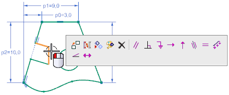
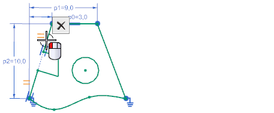

You can create geometric constraints without selecting the Geometric Constraints command. When you select curves, the shortcut toolbar will display all the possible constraints for the selected curves.

You can delete geometric constraints without selecting the Show / Remove Constraints command. When you select geometric constraint symbols, the shortcut toolbar will display the Delete command.

You can also right-click objects and choose a command from the list.
|
Application |
Modeling, Drafting, Shape Studio, Sheet Metal |
|
Prerequisites |
Sketch task environment, or while a sketch is active |